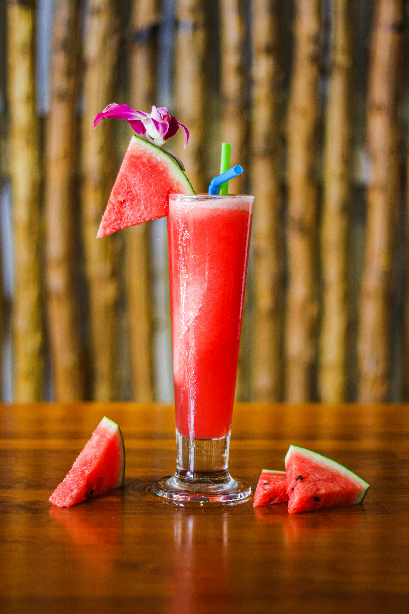

Home
Watermelon Juice

Description
This 3-ingredient watermelon juice is extra-easy to make and can be the base for many other, equally tasty drinks!
Ingredients
- 1 small seedless watermelon
- 1 tbsp lime juice
- Pinch of sea salt
Steps
- Scoop flesh out of watermelon and cut into cubes.
- Add lime juice and a pinch of sea salt.
- Blend for 30 seconds or until smooth.
- Chill and serve.